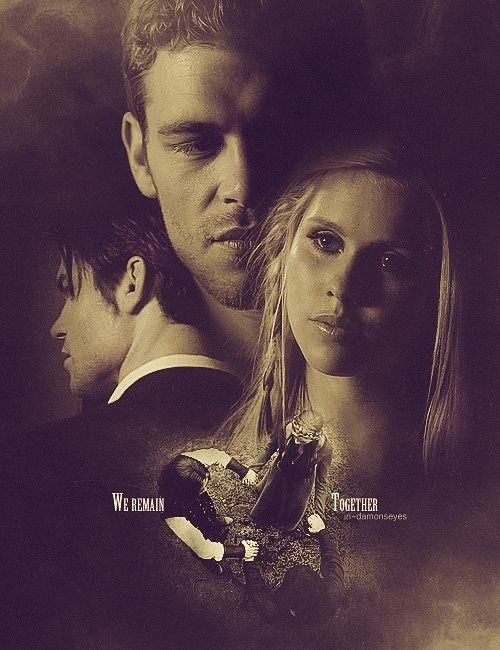

Diario de Vampiros
Donde la noche guarda sus secretos...

El Diario de Vampiros narra la historia de Elena Gilbert y los hermanos vampiros Stefan y Damon Salvatore,
en un mundo lleno de secretos, magia y luchas por el poder.
Personajes
- Elena Gilbert
- Stefan Salvatore
- Damon Salvatore
- Bonnie Bennett
- Caroline Forbes
Adaptaciones
- Basada en los libros de L.J. Smith
- Serie televisiva “The Vampire Diaries”
- Spin-off: The Originals
- Spin-off: Legacies
Temporada 1: El despertar

La primera temporada introduce a Elena Gilbert, una joven marcada por la pérdida de sus padres,
y a los hermanos vampiros Stefan y Damon Salvatore, cuyo regreso a Mystic Falls desata una serie
de eventos que cambiarán la vida de todos. La trama se centra en el triángulo amoroso, el misterio
de la ciudad y la revelación de un mundo oculto lleno de criaturas sobrenaturales. A medida que
Elena se adentra en este universo, descubre secretos que pondrán a prueba su valentía y su corazón.
Fecha de emisión: 2009–2010
Episodios: 22
Personajes que se mantienen:
- Elena Gilbert
- Stefan Salvatore
- Damon Salvatore
Nuevos personajes:
- Bonnie Bennett
- Caroline Forbes
- Jeremy Gilbert
- Vicki Donovan
Hechos importantes:
- Elena descubre la verdad sobre Stefan y Damon.
- Se revela la existencia de los vampiros en Mystic Falls.
- La relación entre humanos y seres sobrenaturales comienza a tensarse.
Temporada 2: La maldición

La segunda temporada profundiza en la llegada de Klaus y la maldición del sol y la luna,
que amenaza con destruir el equilibrio entre vampiros y hombres lobo. Los protagonistas
enfrentan nuevos desafíos mientras las alianzas se ponen a prueba y los sacrificios
se vuelven inevitables. La oscuridad se intensifica y los secretos familiares salen a la luz,
mostrando que el poder de los Originales puede cambiar el destino de todos.
Fecha de emisión: 2010–2011
Episodios: 22
Personajes que se mantienen:
- Elena Gilbert
- Stefan Salvatore
- Damon Salvatore
- Bonnie Bennett
- Caroline Forbes
Nuevos personajes:
- Klaus Mikaelson
- Elijah Mikaelson
- Katherine Pierce
Hechos importantes:
- Se revela la existencia de los Originales.
- La maldición del sol y la luna se convierte en el eje central.
- El sacrificio de Jenna marca un punto de quiebre.
Temporada 3: Los originales

La tercera temporada expande la historia hacia la poderosa familia Mikaelson, los vampiros originales,
cuyo legado y poder ancestral revelan nuevas amenazas. Stefan, bajo la influencia de Klaus, se convierte
en el “Destripador”, mientras Damon y Elena enfrentan sentimientos cada vez más intensos. La trama explora
los orígenes de la inmortalidad y las tensiones entre los hermanos Salvatore, mientras los vínculos con
los Originales redefinen el destino de Mystic Falls.
Fecha de emisión: 2011–2012
Episodios: 22
Personajes que se mantienen:
- Elena Gilbert
- Stefan Salvatore
- Damon Salvatore
- Caroline Forbes
- Bonnie Bennett
Nuevos personajes:
Hechos importantes:
- Se revela la historia de los Originales.
- Stefan se convierte en el “Destripador”.
- La relación entre Elena y Damon se intensifica.
Temporada 4: La transformación
La cuarta temporada marca un cambio radical en la vida de Elena, quien completa su transición a vampira
y debe aprender a controlar sus nuevos instintos. La búsqueda de la cura para el vampirismo se convierte
en el eje central de la trama, mientras la aparición de Silas y Qetsiyah introduce un nuevo nivel de
misterio y peligro. Las alianzas se ponen a prueba y los personajes enfrentan decisiones que alterarán
para siempre el rumbo de sus vidas.
Fecha de emisión: 2012–2013
Episodios: 23
Personajes que se mantienen:
- Elena Gilbert
- Stefan Salvatore
- Damon Salvatore
- Caroline Forbes
- Bonnie Bennett
Nuevos personajes:
Hechos importantes:
- Elena completa su transición a vampira.
- La búsqueda de la cura se convierte en el eje central.
- La aparición de Silas cambia el rumbo de la historia.